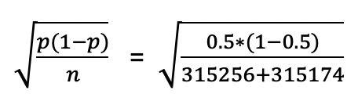
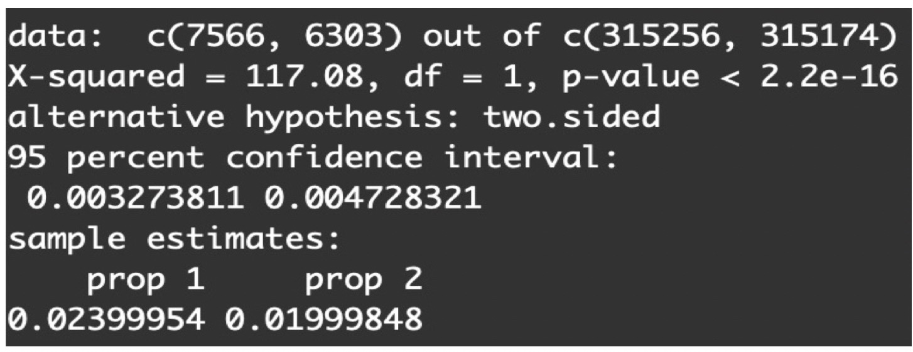

- 00 开篇词 用好A_B测试，你得这么学.md.html
- 01 统计基础（上）：系统掌握指标的统计属性.md.html
- 02 统计基础（下）：深入理解A_B测试中的假设检验.md.html
- 04 确定指标：指标这么多，到底如何来选择？.md.html
- 05 选取实验单位：什么样的实验单位是合适的？.md.html
- 06 选择实验样本量：样本量越多越好吗？.md.html
- 07 分析测试结果：你得到的测试结果真的靠谱吗？.md.html
- 08 案例串讲：从0开始，搭建一个规范的A_B测试框架.md.html
- 09 测试结果不显著，要怎么改善？.md.html
- 10 常见误区及解决方法（上）：多重检验问题和学习效应.md.html
- 11 常见误区及解决方法（下）：辛普森悖论和实验组_对照组的独立性.md.html
- 12 什么情况下不适合做A_B测试？.md.html
- 13 融会贯通：A_B测试面试必知必会（上）.md.html
- 14 举一反三：A_B测试面试必知必会（下）.md.html
- 15 用R_Shiny，教你制作一个样本量计算器.md.html
- 加餐 试验意识改变决策模式，推动业务增长.md.html
- 导读 科学、规范的A_B测试流程，是什么样的？.md.html
- 结束语 实践是检验真理的唯一标准.md.html
- 捐赠
07 分析测试结果：你得到的测试结果真的靠谱吗？
你好，我是博伟。
经过前面的确定目标和假设、确定指标、选取实验单位、计算所需样本大小后，我们终于来到了A/B测试的最后一站：分析测试结果。
在正式开始之前，我想先问你一个问题：拿到测试结果之后，就可以马上进行分析了吗？肯定不行。因为只有确定测试结果值得信赖之后，才可以进行分析。其实，分析A/B测试结果并不难，难的是如何得出值得信赖的结果，从而给业务以正确的指导。
为什么这么说呢？接下来，我就通过一个音乐App要提高用户升级率的例子，和你先拆解下导致测试结果不可靠的因素有哪些，然后再看看具体该怎么分析。
案例导入
通常情况下，音乐App有两种盈利模式，一种是提供免费音乐，但是会在App中加广告，通过广告赚钱；一种是让用户付费订阅App，享受高品质的免广告音乐。
我们的这款音乐App是两种盈利模式都有，但是从长期盈利效果和用户体验来看，采用用户付费订阅的模式会更胜一筹。因此，我们计划在双十一前后，针对App里的免费用户做一次促销，吸引他们付费。
现在有这么两条广告语，为了通过A/B测试验证哪条更有效，将其分别放到实验组和对照组：
- 对照组广告语：千万曲库免广告无限畅听，用户升级，免费试用半年！
- 实验组广告语：即日起到11月15日，用户升级，免费试用半年！
现在，我们来完成A/B测试的整体设计方案。
- 确定目标：使更多的免费用户升级成为付费用户。
- 提出假设：通过在广告语中加入倒计时这种增加紧迫感的信息，能够提升免费用户的升级率。
- 确定实验单位：免费用户的用户ID。
- 实验组/对照组：随机分配，50%/50%。
- 评价指标：用户升级率 = 点击广告升级的用户数 / 看到广告的用户数。
- 评价指标的波动范围：[1.86%，2.14%]。
设计好了A/B测试的框架，实施了A/B测试后，我们就可以等待分析测试结果了。那什么时候可以查看测试结果，停止A/B测试呢？这是保证测试结果可信赖要解决的第一个问题。
什么时候可以查看测试结果？
还记得我们上节课，在计算测试要达到显著性结果所需的最小样本量时，用到的一个公式吗？
A/B测试所需的时间 = 总样本量 / 每天可以得到的样本量。
结合这个公式，再根据App中每天免费用户的流量，我们可以计算出这个测试在理论上需要跑10天。
其实，这个公式只是理论上推导，具体到A/B测试的实践中，我们要确定测试时间，除了考虑样本量的大小外，还要考虑指标周期性变化的因素。
如果指标具有强烈的周期性变化，比如周中和周末的变化很大，那么这时候的测试时间要包含至少一个周期的时间，以排除指标周期性变化的影响。
在音乐App这个案例中，我们通过历史数据发现，在周末升级的用户要比周中多。这就说明用户升级率这个评价指标，会以每周为单位形成周期性的变化，所以我们的测试至少要跑7天。而我们通过最小样本量已经算出了本次测试需要跑10天，包含了一个周期，所以我们可以放心地把测试时间定为10天。
我再多补充一句，如果计算出的测试时间小于一个周期的时间，那么最好也按照一个周期来算，这样做更为保险。
不过啊，在测试实际进行的过程中，有可能出现这样一种情况：在预计时间之前，评价指标出现了显著不同。这时候你就要小心了，如果提前结束测试，就会前功尽弃。我来给你具体解释下。
假设负责这个测试的数据分析师是第一次做A/B测试，所以特别激动兴奋，每天都在观测实验，计算测试结果。在实验进行到第6天的时候（样本量还没有达到预期），他发现实验组和对照组的评价指标出现了显著的不同。这位数据分析师就在想，测试结果在预计时间之前达到了统计显著，这个实验是不是提前成功了呢？
答案当然是否定的。
一方面，因为样本量是不断变化的，所以每次观测到的测试其实都可以算作新的实验。根据统计上的惯例，A/B测试一般有5%的第一类错误率α，也就是说每重复测试100次，平均就会得到5次错误的统计显著性的结果。
这就意味着如果我们观测的次数变多的话，那么观测到错误的统计显著结果的概率就会大大提升，这是多重检验问题（Multiple Testing Issue）的一种体现。关于多重检验问题，我会在第9节课中详细讲解。
另一方面，提前观测到统计显著的结果，这就意味着样本量并没有达到事先估算的最小样本量，那么这个所谓的“统计显著的结果”就极有可能是错误的假阳性（False Positive）。“假阳性”是指，两组事实上是相同的，而测试结果错误地认为两组显著不同。
因此这位数据分析师还不能提前结束这次测试，仍然需要继续观测实验。
但如果测试已经跑到了第10天，样本量也达到了之前计算的量，那是不是就可以开始分析A/B测试的结果了呢？
答案依旧是不行。
俗话说心急吃不了热豆腐，为了确保实验在具体实施过程中按照我们预先设计的进行，保证中途不出现Bug，那么在正式分析实验结果前，我们还要进行测试的合理性检验（Sanity Check），从而保证实验结果的准确性。
在第3和第4节课我们学过，为了确保在具体实施过程中不会出现破坏统计合理性的Bug，我们可以用护栏指标来保证统计品质。这时，我们可以使用实验/对照组样本大小的比例和实验/对照组中特征的分布这两个护栏指标。这是保证测试结果可信赖，我们要关注的第二个问题。
保障统计品质的合理性检验
检验实验/对照组样本量的比例
我们预设的是，实验组和对照组的样本量各占总样本量的50%，现在我们来看看实验过程中有没有发生什么变化。
各组样本量占总样本量的比例也是概率，也是符合二项分布的，所以具体的操作方法（参见第4节课指标波动性的相关内容）是：
- 首先根据二项分布的公式\(\\sqrt{\\frac{p(1-p)}{n}}\)算出标准误差。
- 然后，以0.5（50%）为中心构建95%的置信区间。
- 最后，确认实际的两组样本量的比例是否在置信区间内。
如果总的比例在置信区间内的话，就说明即使总的比例不完全等于50%/50%，也是非常接近，属于正常波动，两组样本量大小就符合预期。否则，就说明实验有问题。那该如何确认和解决潜在问题呢？
回到我们的A/B测试上来，我们实验组的样本量315256，对照组的样本量为315174。通过公式我们求得标准误差为：- 计算出来的结果是0.06%，我们构建了95%的置信区间[50%-1.96*0.06%, 50%+1.96*0.06%] = [49.88%,50.12%]，也就是两组占比的波动范围，然后算出总体的实验组/对照组的样本量比例=50.01%/49.99%。
可以看到，两组占比均在置信区间内，属于正常波动。也就是说，两组样本量符合均分的预期，成功通过了实验/对照组样本量的比例这个合理性检验。那我们接下来就可以进行实验/对照组中特征的分布这个合理性检验了。
检验实验/对照组中特征的分布
A/B测试中实验组和对照组的数据要相似才具有可比性。这里的相似，我们可以通过比较两组的特征分布来判断。
常用的特征包括用户的年龄、性别、地点等基本信息，或者可能影响评价指标的特征。比如在音乐App这个案例中，我们还可以查看用户平时的活跃程度。如果这些特征在两组中分布比例相差较大，则说明实验有问题。
一旦从合理性检验中发现了问题，就不要急着分析实验结果了，实验结果大概率是不准确的。我们要做的就是找到出现问题的原因，解决问题，并重新实施改进后的A/B测试。
找原因的方法主要有以下两种：
- 和工程师一起从实施的流程方面进行检查，看看是不是具体实施层面上两组有偏差或者bug。
- 从不同的维度来分析现有的数据，看看是不是某一个特定维度存在偏差。常用的维度有时间（天）、操作系统、设备类型等。比如从操作系统维度，去看两组中iOS和Android的用户的比例是否存在偏差，如果是的话那说明原因和操作系统有关。
通过数据分析发现这两组数据中重要特征的分布基本一致，说明两组数据是相似的。这就意味着我们已经通过了合理性检验，接下来我们就可以分析A/B测试的结果了。
最后，我还想跟你强调一下，这两个合理性检验是都要进行的，这是保障实验质量的关键。这两种检验如果没有通过的话都会使实验结果不准确，具体来说，实验/对照组样本量的比例和实验设计不相同时会出现样本比例不匹配问题（Sample Ratio Mismatch），实验/对照组的特征分布不相似则会导致辛普森悖论问题（Simpson Paradox），这两类问题我们会在第11节课中重点讲解。
如何分析A/B测试的结果？
其实，分析A/B测试的结果，主要就是对比实验组和对照的评价指标是否有显著不同。那怎么理解“显著”呢？其实，“显著”就是要排除偶然随机性的因素，通过统计的方法来证明两者的不同是事实存在的，而不是由于波动性造成的巧合。
那具体怎么做呢？
首先我们可以用统计中的假设检验（Hypothesis Testing）计算出相关的统计量，然后再来分析测试的结果。最常用的统计量是用P值（P value）和置信区间(Confidence Interval)这两种统计量。
你可能会说，假设检验中有各种各样的检验（Test），我应该选取什么检验来计算P值和置信区间呢？这里我们不需要理解这些检验的复杂理论解释，只要熟悉实践中常用的3种检验方法的使用场景就可以了：
- Z检验（Z Test）
当评价指标为概率类指标时（比如转化率，注册率等等），一般选用Z检验（在A/B测试中有时又被称为比例检验（Proportion Test））来计算出相应的P值和置信区间。
- T检验（T Test）
当评价指标为均值类指标时（比如人均使用时间，人均使用频率等等），且在大样本量下可以近似成正态分布时，一般选用T 检验来计算相应的P值和置信区间。
- Bootstrapping
当评价指标的分布比较复杂，在大样本量下也不能近似成正态分布时（比如70%用户的使用时间，OEC等），一般采用Bootstrapping的方法，从P值或者置信区间的定义来计算P值和置信区间（具体方法请参见第三节课指标波动性的相关内容）。
现在我们已经拿到了如下的测试结果：
- 实验组：样本量为315256，升级的用户为7566，升级率为2.4%。
- 对照组：样本量为315174，升级的用户为6303，升级率为2.0%。
因为评价指标的波动范围是[1.86%,2.14%]，所以我们可以得出实验组的升级率2.4%并不属于正常范围，很有可能显著不同于对照组。
接下来，我们就可以通过P值法和置信区间法来分析这个测试结果，验证我们的假设是否正确。
P值法
首先我们可以采取P值法，借助一些计算工具，常见有Python、R，还有网上的一些在线工具（比如这个网站），都可以计算P值。具体选择哪个工具，根据自己的喜好来就可以。我个人比较喜欢选用R来计算：
results <- prop.test(x = c(7566, 6303), n = c(315256, 315174))
因为用户升级率这个评价指标属于概率类指标，所以我们选择了专门针对概率类指标的函数prop.test。
通过计算，我们可以得到P值 < \(2.2 e^{-16}\)：

根据统计惯例，一般我们会把测试的显著水平（Significance Level）α定为5%（统计上的约定俗成），再把计算出来的P值和5%相比。当P值小于5%时，说明两组指标具有显著的不同。当P值大于5%时，说明两组指标没有显著的不同。如果你对这块概念还不是很清楚，可以回顾下第二节课中假设检验的内容。
从上面的结果可以看出，P值远远小于5%且接近于0，说明两组指标具有显著的不同，这就意味着实验组的广告语确实能提升免费用户的升级率。
置信区间法
在第三节课介绍指标时，我们学习了该怎样构建置信区间。现在我们要比较实验组和对照组的评价指标是否显著不同，也就是看两者的差值是不是为0。这时候，我们就要构建两组指标差值\(\\left(p\_{\\text {test}}-p\_{\\text {control}}\\right)\)的置信区间了。
置信区间的具体计算我们也可以借助Python和R等软件，当然你也可以使用我在第二讲时介绍过的具体函数，这里我们还是用R的prop.test这个函数。
其实当我们在上面用这个函数计算P值时，R也顺便把95%的置信区间算出来了：- 
由图可见，95%的置信区间为[0.0033, 0.0047]。
接下来，我们需要比较一下两组指标是否有统计显著的不同，也就是要看看这个置信区间是否包括0。
我们知道数值在置信区间内均为正常波动，如果置信区间包括0的话，就说明两组指标的差值也有可能为0，两组指标是相等的。而如果置信区间不包括0的话，就说明两组指标的差值不为0，两组指标是显著不同的。
显然，[0.0033, 0.0047]这个置信区间是不包括0的，也就是说我们的测试结果是统计显著的。那对应到业务上，与对照组的广告语（千万曲库免广告无限畅听，用户升级，免费试用半年！）相比，带有紧迫感的实验组广告语（实验组广告语即日起到11月15日，用户升级，免费试用半年！）能吸引更多用户升级，也就验证了我们最开始的假设是成立的。
学到这里，我们发现无论是P值法还是置信区间法，都可以用来分析A/B测试结果是否具有统计显著性。那么，在实际应用中该如何选择呢？两者有什么差别吗？
其实，在大部分情况下这两种方法是通用的，只要选择一种就可以。但如果需要考虑实施变化后的收益和成本的关系时，我们就要选择置信区间法了。
因为要考虑收益和成本的关系时，除了满足结果在统计上是显著的（两组指标不相同，差值的置信区间不包括0）还不够，更要让结果在业务上也是显著的（两组指标不仅要不相等，而且其差值δ >= \(\\delta\_{\\text {收支平衡}}\)，并且差值的置信区间的范围都要比\(\\delta\_{\\text {收支平衡}}\)大）。
小结
这节课我们主要讲解了A/B测试中如何分析结果，根据实践经验我给你总结了3个要点：
- 切莫心急，一定要等到达到足够样本量时再分析测试结果。
- 分析结果前一定要做合理性检验来确保测试的质量，否则一旦实施过程中出现Bug，就会功亏一篑。
- 一定要根据指标和数据的特点，选择正确的分析方法来得出可以驱动业务的结论。
数据领域有一句名言：“Garbage in, garbage out”，意思就是“放进去的是垃圾，产出的还是垃圾”。这句话放在A/B测试中同样适用：如果A/B测试没有设置好，或者虽然计划得很好，但要是在实施过程中出现了问题，也会得到错误的结果和结论，从而给业务带来难以估量的损失。
所以，前面我们用4节课来讲怎么设置实验，今天又花了很多篇幅来介绍确保结果是可信赖的，都是在给“分析测试结果”做铺垫。
好了，今天这个音乐App的测试得到了显著的结果，皆大欢喜。但是如果结果不显著，又该怎么办呢？
关于这个问题，我们在第9节课再来好好讨论！
思考题
你觉得分析结果前的合理性检验还可以参考哪些护栏指标呢？为什么？
欢迎在留言区写下你的思考和答案，我们一起交流讨论。如果你觉得有所收获，欢迎你把这一讲分享给你的朋友，邀请他一起学习。
© 2019 - 2023 Liangliang Lee. Powered by gin and hexo-theme-book.